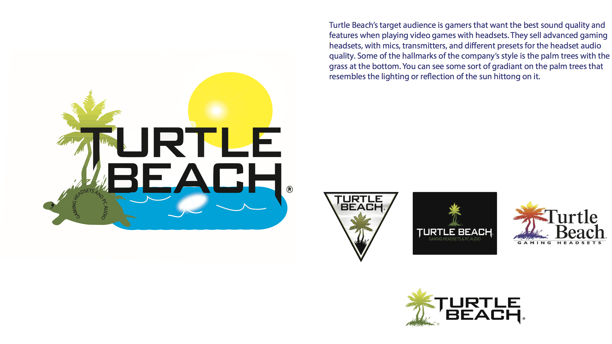

|| ~ ILLUSTRATION PROJECT ~ ||
For the Illustration Project, we have to use the program known as Adobe Illustrator, which helps very well by vectorizing images. Vectorizing makes them completely digital. There are also many other features that you can use on Illustrator, such as messing around with text and it's typography. This program is pretty good to make logos. So for our class, we had to take an official logo and edit it, while writting a paragraph with information about it. Also show some of their previous logos if possible. If you can't read what it says in the image below, keep reading on the next paragraph.

Turtle Beach's target audience is gamers that want the best sound quality and features when playing video games with headsets. They sell advanced gaming headsets, with mics, transmitters, and different presets for the headset audio quality. Some of the hallmarks of the company's style is the palm trees with the grass at the bottom. You can see some sort of gradiant on the pam trees that resembles the lighting or reflection of the sun hitting on it. (...and yes, I'm fully aware of my typo) To go back to the top of the page, click here.